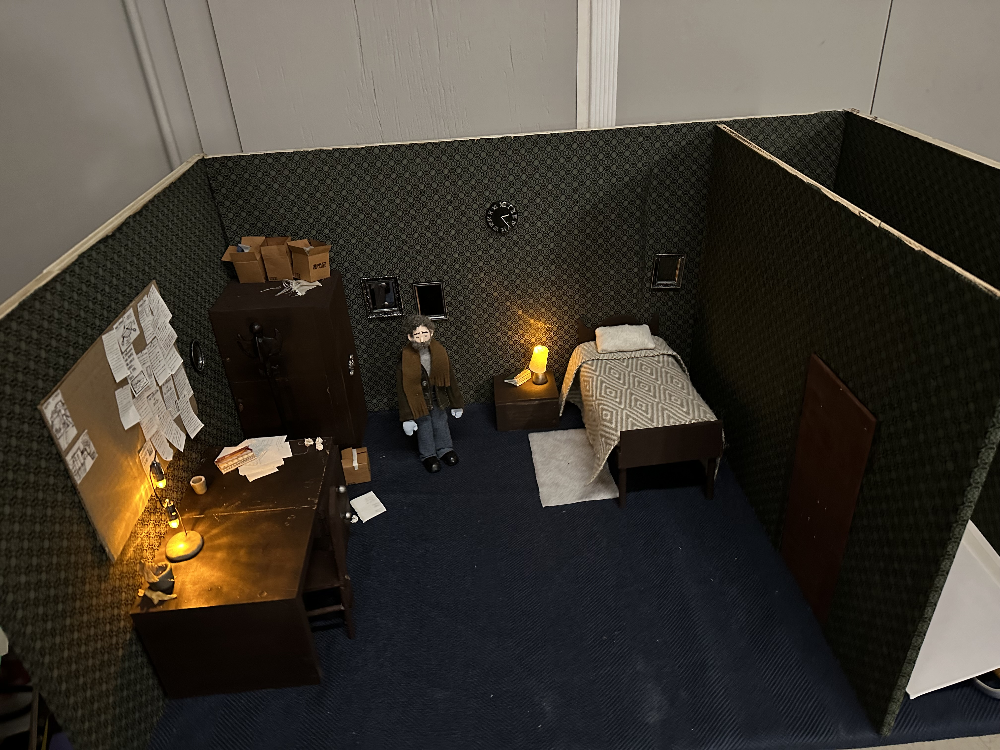
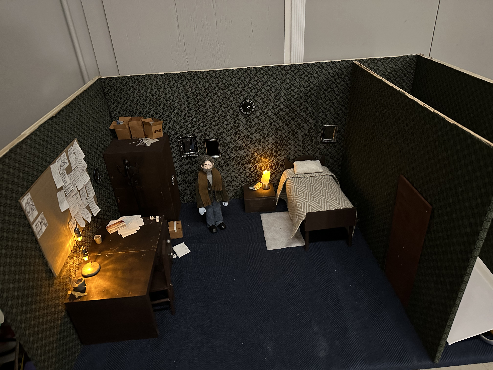
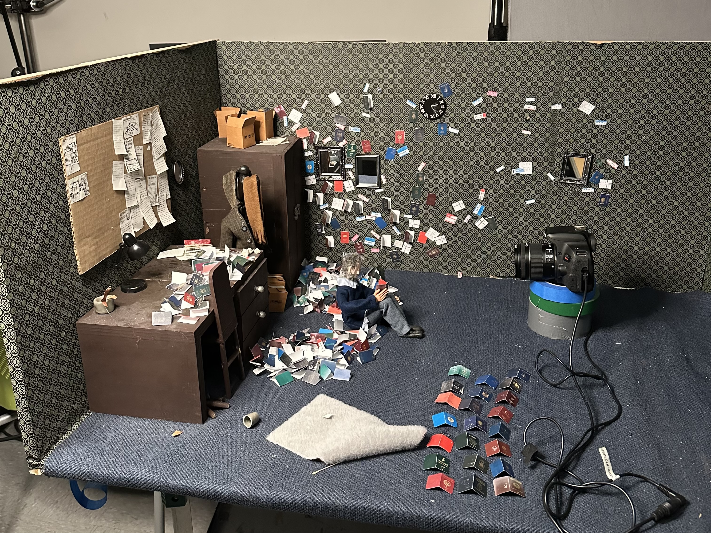

About the Film
Adam is a stop‑motion short set entirely within a bedroom where passports multiply and memories falter. It explores the fracture between past and present, belonging and loss, as identity is renegotiated in the space between remembering and forgetting.
Watch
Film link (Vimeo): vimeo.com/1124508263
Show password
Password: Adam2025!
Note: This link is intended for festival programmers and private viewing.
Synopsis
Short
Adam wakes to a face without eyes and a self he no longer recognizes. As he searches for who he once was, Adam experiences the fracture between past and present, the erosion of memory that time brings, and the haunting fear of losing where he belongs.
Read the long synopsis
When memory begins to fail us, when it no longer shields us from the terrifying uncertainty of not knowing who we are, and when we find ourselves haunted in limbo between remembering and forgetting, our physical surroundings often become the last anchors to our identity. Familiar objects become silent witnesses to who we once were. But what happens when even those tangible remnants begin to fade, to feel foreign, to contradict the truth we carry deep inside?
Screenings & Recognition
- Best Animated Short Film, Indo/Dubai International Film Festival (July 2025)
- Buffalo International Film Festival — Official Selection (Screening: Oct 12, 2025)
- Arpa International Film Festival (TCL Chinese Theatre, Hollywood) — Official Selection & Nominee: Best Animated Film (Sept 2025)
- SMFA at Tufts — 2025 Outstanding Creative Achievement Award (June 2025)
Director
Fadi Azra, born and raised in Syria, is a 21-year-old artist and third-year student at Tufts University in Boston, Massachusetts. He is from Al-Bayadiyah and attended Amir Ibrahim High School in Hama before moving to the United States in 2023. He began his college career at the Tufts School of the Museum of Fine Arts and later transferred to Tufts’ Combined Degree Program, where he is pursuing a Bachelor of Fine Arts and a Bachelor of Science in Engineering Psychology (Human Factors Engineering).
Fadi’s artistic practice centres on storytelling through stop-motion animation, painting, and drawing. A lifelong artist, Fadi began making puppets and painting at the age of six and continues to explore creative approaches to expression that bridge his fine arts background with psychological inquiry.
Artist’s Statement
Haunted in limbo between remembering and forgetting
When memory fades and no longer shields us from the terrifying uncertainty of losing who we are, where we came from, and what we’ve endured, physical surroundings often become the last anchors to our past identity. A familiar scent, a family photo, or an old passport becomes a silent witness to who we once were. But what happens when even those tangible remnants begin to fade, feel foreign, and conflict with the truth we carry deep inside? When the physical starts to betray us, we’re left disoriented and haunted by being in limbo between remembering and forgetting.
Adam is my depiction of that fear — the fear of forgetting where I came from. It is my way of processing the ache of distance, the fragility of memory, and the erosion of identity that time brings. I’ve been away from Syria, my home, for two years now. I know I’ll continue living in the United States while pursuing my education for at least the next three years. And with each passing day, I wrestle with a growing fear: what if I forget what it means to be Syrian? What if I wake up one day and no longer recognize the feelings, smells, and stories that once shaped me? To hold on to my origins and identity, I surround myself with objects that remind me of home. But these fragments, though meaningful, often feel small and powerless in the larger spaces I now occupy. They aren’t enough to fully preserve who I was, and I worry that even they are beginning to lose their connection to the world they came from.
Adam is not just a character; he is me, and he is anyone who has ever feared losing their connection to their homeland. This story is both deeply personal and universally resonant, asking the question: what defines us when everything familiar begins to slip away?
The Making of Adam
Puppet
I’ve been making dolls since I was six years old. In my first attempts, I melted plastic hangers to form joints, used eggshells for heads, and wrapped yarn around wire to create bodies. Later came my DIY fairy dolls that were crafted with wires, fake flowers, and scraps of fabric. So, when it came time to make Adam, it felt as if I had come full circle. Building him was one of my favorite parts of the entire filmmaking process.
The first sketch of Adam appeared one night during my first year of college. I had been thinking about what it meant to leave home — and the fear that, with time, I might begin to lose my memory of home. From that thought, and from the tears that followed, Adam was born.
The prototype version of Adam became my first real experiment in stop-motion puppet building. As a college student with limited resources, I couldn’t afford a professional ball-and-socket skeleton, so I built his frame out of wire. After animating with him for a semester, I quickly learned the downsides — wires break easily and can’t hold consistent poses.
A year later, I received a small grant from my university — around $200 — which I used to invest in a proper ball-and-socket armature and hands. That upgrade transformed the puppet’s movement and durability, and from there, the final version of Adam came to life.
To bring Adam’s body to completion, I sculpted epoxy clay carefully around the skeleton, then wrapped it with a thin layer of fiber filling before dressing him. This layering gave him smooth, natural bends at the joints. His head was also made from epoxy sculpt, and I hand-painted the face with acrylics. I hand-sewed all of Adam’s clothes from scrap fabrics — his shirt, in fact, was made from one of my own striped shirts. That small detail mattered to me; I saw Adam as an extension of myself, and incorporating something of my own felt like giving him a part of my story.
Set
The elements of Adam’s world were handmade. The set’s furniture — the desk, bed, side table, closet, and walls — was built entirely from wood. I attached a metal sheet beneath the floor of the set, covered it with a thin layer of dark blue fabric, and placed small magnets inside Adam’s shoes to help control his steps during animation.
 

One of the most time-consuming props was the stack of tiny passports that appears in the film. I gathered stock images of passports from countries all over the world, printed them on cardstock, and hand-cut and folded each one. In total, I made about 500 miniature passports — a process that took nearly three weeks to complete.
The repetition and slowness of making those passports became an essential part of the process. When I thought about what forms someone’s identity, I realized how overwhelming it is — the countless elements that shape who we are. Each passport felt like a small fragment of that identity: what it could mean, what it could’ve meant, or what it might still mean in the future. That sense of fracture, confusion, and the constant re-evaluation of identity found its way into the rhythm of my hands — sitting at a table, cutting these tiny, colorful papers that carried so much symbolic weight.
Contact
Email: fadiazra8@gmail.com
Instagram:
@fadi_azra_art